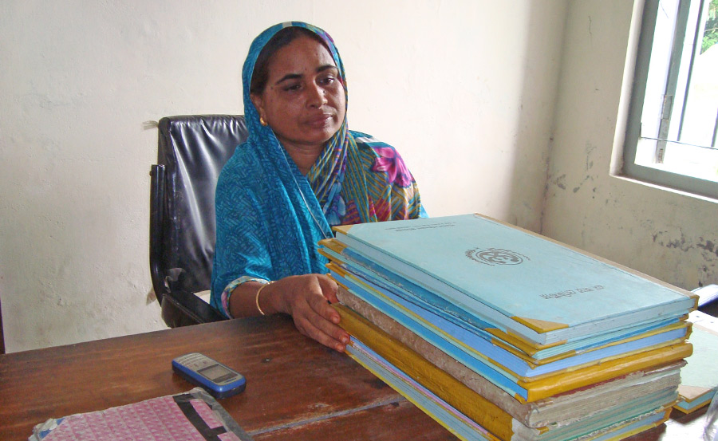

Health promotion and family planning have been an important priority for Bangladesh since independence in 1971. So important, in fact, that the Ministry of Health and Family Welfare (MOHFW) was created with a bifurcated structure; it is divided into the Directorate General of Family Planning (DGFP) and the Directorate General of Health Services (DGHS). DGFP is charged with oversight of family planning services and aspects of maternal and child health. DGHS has jurisdiction over all other health services, with an emphasis on childhood vaccinations.
DGFP services are delivered through both community- and facility-based approaches; the Family Welfare Assistant (FWA) is charged with the community-based distribution of family planning methods, while the Family Welfare Visitor (FWV) provides complimentary family planning and maternal and child health services from a clinical setting. The frontline health worker for DGHS, the community-based Health Assistant (HA), is primarily responsible for execution of the country’s Expanded Program on Immunization (EPI) at rotating outreach sessions.
As they work, each cadre is tasked with client registration and tracking of service provision in paper registers provided by the HIS unit within their respective branch of the Ministry. This has led to overlaps in service delivery and inefficient workflows at the field level, and conflicting sets of health indicators at the national level. Under the current system there is a disconnect between the data that is needed, collected, and used for decision-making.
OpenSRP in Bangladesh aims to streamline data collection and aggregation and allow for instantaneous communication between health workers, allowing for smoother and more timely service delivery as well as reliable national health indicators. The platform will be adapted for Bangladesh by select members of the Johns Hopkins University, JiVitA Project Research Team with technical support from Dhaka-based mPower Social Enterprises, Inc.